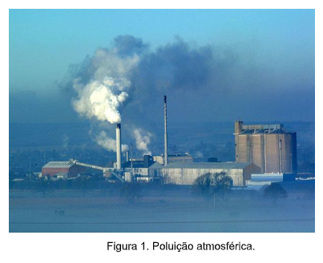
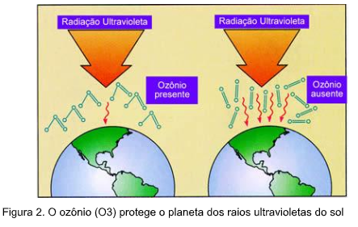

Capítulo 3
Composição do ar e efeito estufa e a Indústria Calçadista
O ar atmosférico é composto basicamente por 78% de Nitrogênio, 21% de Oxigênio e 1% de demais gases. Essa combinação de elementos, torna nosso planeta ideal para a vida.
CONTEXTUALIZANDO
O que é poluição?
A poluição é a emissão de resíduos sólidos, líquidos ou gasosos (poluentes), para o ar, água e solo, em quantidades superiores à capacidade que o ambiente tem de os absorver ou inativar.
A poluição atmosférica resulta da emissão de gases e poeiras para a atmosfera.
• indústrias;
• tráfego automóvel;
• atividades domésticas
• fogos florestais;
• queima de resíduos;
• atividade vulcânica.
(RE)CONSTRUINDO CONHECIMENTOSDurante a fabricação do calçado, geram-se resíduos de retalhos de couros, possíveis refugos de solado, entressola e palmilha de calçados e os resíduos em forma de pó oriundo do lixamento do calçado na fase de acabamento, entre outros. Garlet (1998) afirma que muitas indústrias o depositam estes resíduos em áreas a céu aberto, e isso causa vários problemas ambientais, como poluição visual, proliferação de insetos e pequenos animais, além de existir uma ameaça constante de combustão do material. Segundo este mesmo autor, algumas indústrias vêm jogando esses resíduos em depósitos clandestinos, escondidos em locais de difícil acesso para fugir das fiscalizações dos órgãos competentes, e sem tomar nenhum tipo de cuidado.
Fonte: https://cenedcursos.com.br/meio-ambiente/gestao-ambiental-empresas/A poluição atmosférica causa destruição das moléculas de ozônio fazendo com que os raios ultravioletas atinjam com grande intensidade a Terra.
Indústrias emitem alguns componentes na atmosfera tais como enxofre e azoto. Os compostos de enxofre e azoto reagem com o vapor de água da atmosfera formando ácidos (ácido sulfúrico e nítrico), formando as chuvas ácidas.
1) Do que é composto o ar atmosférico?
2) Indique os principais causadores de poluição atmosférica.
3) Explique como funciona o efeito estufa?
4) De que maneira a indústria calçadista pode afetar negativamente a atmosfera?
1) C
2) Podemos reduzir a emissão de poluentes através de tratamento de esgotos e controlando a poluição de chaminés em fábricas.
3) Significa produzir (calçados e roupas) ou demais objetos a partir de materiais recicláveis e reutilizáveis.
4) Através de emissão de gases poluentes pelas fábricas.